Warning: `gather_()` was deprecated in tidyr 1.2.0.
ℹ Please use `gather()` instead.
ℹ The deprecated feature was likely used in the survminer package.
Please report the issue at <https://github.com/kassambara/survminer/issues>.
`geom_smooth()` using formula = 'y ~ x'
`geom_smooth()` using formula = 'y ~ x'
# Run survival analysis using utility functionanalysis_result<-run_survival_analysis( data =flare.cd.df, var_name ="control_8", outcome_time ="hardflare_time", outcome_event ="hardflare", legend_title ="IBD Control-8", plot_base_path ="plots/cd/hard-flare/ibd/control-8", break_time_by =500, palette =c("#1A8FE3", "#E76D83"))# Extract hazard ratio for continuous control_8 variablefit.me<-coxph(Surv(hardflare_time, hardflare)~Sex+IMD+cat+control_8+frailty(SiteNo), control =coxph.control(outer.max =20), data =flare.cd.df)cd.hard.forest<-rbind(cd.hard.forest, get_HR(fit.me, "control_8"))# Display plot and model summaryknitr::include_graphics("plots/cd/hard-flare/ibd/control-8.png")
# Run survival analysis using utility functionanalysis_result<-run_survival_analysis( data =flare.uc.df, var_name ="control_8", outcome_time ="hardflare_time", outcome_event ="hardflare", legend_title ="IBD Control-8", plot_base_path ="plots/uc/hard-flare/ibd/control-8", break_time_by =500, palette =c("#1A8FE3", "#E76D83"))# Extract hazard ratio for continuous control_8 variablefit.me<-coxph(Surv(hardflare_time, hardflare)~Sex+IMD+cat+control_8+frailty(SiteNo), control =coxph.control(outer.max =20), data =flare.uc.df)uc.hard.forest<-rbind(uc.hard.forest, get_HR(fit.me, "control_8"))# Display plot and model summaryknitr::include_graphics("plots/uc/hard-flare/ibd/control-8.png")
# Handle VAS control (already categorized as character)flare.cd.df$vas_control_cat<-factor(flare.cd.df$vas_control)# Run survival analysis using utility functionanalysis_result<-run_survival_analysis( data =flare.cd.df, var_name ="vas_control", outcome_time ="softflare_time", outcome_event ="softflare", legend_title ="IBD Control VAS", plot_base_path ="plots/cd/soft-flare/ibd/control-vas", break_time_by =200, palette =c("#1A8FE3", "#E76D83"))# Extract hazard ratio for vas_control variablefit.me<-coxph(Surv(softflare_time, softflare)~Sex+IMD+cat+vas_control+frailty(SiteNo), control =coxph.control(outer.max =20), data =flare.cd.df)# Display plot and model summaryknitr::include_graphics("plots/cd/soft-flare/ibd/control-vas.png")
# Run survival analysis using utility functionanalysis_result<-run_survival_analysis( data =flare.cd.df, var_name ="vas_control", outcome_time ="hardflare_time", outcome_event ="hardflare", legend_title ="IBD Control VAS", plot_base_path ="plots/cd/hard-flare/ibd/control-vas", break_time_by =500, palette =c("#1A8FE3", "#E76D83"))# Extract hazard ratio for continuous vas_control variablefit.me<-coxph(Surv(hardflare_time, hardflare)~Sex+IMD+cat+vas_control+frailty(SiteNo), control =coxph.control(outer.max =20), data =flare.cd.df)# Display plot and model summaryknitr::include_graphics("plots/cd/hard-flare/ibd/control-vas.png")
# Handle VAS control (already categorized as character)flare.uc.df$vas_control_cat<-factor(flare.uc.df$vas_control)# Run survival analysis using utility functionanalysis_result<-run_survival_analysis( data =flare.uc.df, var_name ="vas_control", outcome_time ="softflare_time", outcome_event ="softflare", legend_title ="IBD Control VAS", plot_base_path ="plots/uc/soft-flare/ibd/control-vas", break_time_by =200, palette =c("#1A8FE3", "#E76D83"))# Extract hazard ratio for vas_control variablefit.me<-coxph(Surv(softflare_time, softflare)~Sex+IMD+cat+vas_control+frailty(SiteNo), control =coxph.control(outer.max =20), data =flare.uc.df)# Display plot and model summaryknitr::include_graphics("plots/uc/soft-flare/ibd/control-vas.png")
# Run survival analysis using utility functionanalysis_result<-run_survival_analysis( data =flare.uc.df, var_name ="vas_control", outcome_time ="hardflare_time", outcome_event ="hardflare", legend_title ="IBD Control VAS", plot_base_path ="plots/uc/hard-flare/ibd/control-vas", break_time_by =200, palette =c("#1A8FE3", "#E76D83"))# Extract hazard ratio for vas_control variablefit.me<-coxph(Surv(hardflare_time, hardflare)~Sex+IMD+cat+vas_control+frailty(SiteNo), control =coxph.control(outer.max =20), data =flare.uc.df)# Display plot and model summaryknitr::include_graphics("plots/uc/hard-flare/ibd/control-vas.png")
# Transform biologic variable and create categorized versionflare.cd.df<-flare.cd.df%>%mutate(Biologic =plyr::mapvalues(Biologic, from =c("Current","Previously","Never prescribed"), to =c("Prescribed","Not prescribed","Not prescribed")))# Create categorized version for survival analysisflare.cd.df$Biologic_cat<-flare.cd.df$Biologic# Run survival analysis using utility functionanalysis_result<-run_survival_analysis( data =flare.cd.df, var_name ="Biologic", outcome_time ="softflare_time", outcome_event ="softflare", legend_title ="Biologic", plot_base_path ="plots/cd/soft-flare/ibd/biologic", break_time_by =200, palette =c("#1A8FE3", "#E76D83"))# Cox modelfit.me<-coxph(Surv(softflare_time, softflare)~Sex+IMD+cat+Biologic+frailty(SiteNo), control =coxph.control(outer.max =20), data =flare.cd.df)# Display plot and model summaryknitr::include_graphics("plots/cd/soft-flare/ibd/biologic.png")
# Transform biologic variable and create categorized versionflare.uc.df<-flare.uc.df%>%mutate(Biologic =plyr::mapvalues(Biologic, from =c("Current","Previously","Never prescribed"), to =c("Prescribed","Not prescribed","Not prescribed")))# Create categorized version for survival analysisflare.uc.df$Biologic_cat<-flare.uc.df$Biologic# Run survival analysis using utility functionanalysis_result<-run_survival_analysis( data =flare.uc.df, var_name ="Biologic", outcome_time ="softflare_time", outcome_event ="softflare", legend_title ="Biologic", plot_base_path ="plots/uc/soft-flare/ibd/biologic", break_time_by =200, palette =c("#1A8FE3", "#E76D83"))# Cox modelfit.me<-coxph(Surv(softflare_time, softflare)~Sex+IMD+cat+Biologic+frailty(SiteNo), control =coxph.control(outer.max =20), data =flare.uc.df)# Display plot and model summaryknitr::include_graphics("plots/uc/soft-flare/ibd/biologic.png")
# Run survival analysis using utility functionanalysis_result<-run_survival_analysis( data =flare.uc.df, var_name ="Mayo", outcome_time ="softflare_time", outcome_event ="softflare", legend_title ="Mayo score", plot_base_path ="plots/uc/soft-flare/ibd/mayo", break_time_by =200, palette =c("#3DDC97", "orange", "#DD7373"))# Cox model using continuous Mayo variablefit.me<-coxph(Surv(softflare_time, softflare)~Sex+cat+Mayo+Extent+frailty(SiteNo), control =coxph.control(outer.max =20), data =flare.uc.df)uc.clin.forest<-rbind(uc.clin.forest,get_HR(fit.me, "Mayo"))# Display plot and model summaryknitr::include_graphics("plots/uc/soft-flare/ibd/mayo.png")
# Run survival analysis using utility functionanalysis_result<-run_survival_analysis( data =flare.uc.df, var_name ="Mayo", outcome_time ="hardflare_time", outcome_event ="hardflare", legend_title ="Mayo score", plot_base_path ="plots/uc/hard-flare/ibd/mayo", break_time_by =200, palette =c("#3DDC97", "orange", "#DD7373"))# Cox model using continuous Mayo variablefit.me<-coxph(Surv(hardflare_time, hardflare)~Sex+cat+IMD+Mayo+frailty(SiteNo), control =coxph.control(outer.max =20), data =flare.uc.df)uc.hard.forest<-rbind(uc.hard.forest,get_HR(fit.me, "Mayo"))# Display plot and model summaryknitr::include_graphics("plots/uc/hard-flare/ibd/mayo.png")
fit.me<-coxph(Surv(softflare_time, softflare)~Sex+cat+IMD+`IBD Duration`+BMI+Treatment+Age+control_8+frailty(SiteNo), control =coxph.control(outer.max =20), data =flare.cd.df)invisible(cox_summary(fit.me))
Cox model summary:
Variable
HR
Lower 95%
Upper 95%
P-value
SexFemale
2.0592
1.5443
2.7457
0.0000
catFC 50-250
1.3701
1.0310
1.8208
0.0300
catFC > 250
2.2602
1.6428
3.1097
0.0000
IMD2
0.7494
0.4529
1.2397
0.2613
IMD3
0.7689
0.4605
1.2837
0.3149
IMD4
0.8471
0.5214
1.3762
0.5027
IMD5
0.9123
0.5686
1.4637
0.7036
IBD Duration
0.9874
0.9760
0.9991
0.0345
BMI
0.9987
0.9761
1.0218
0.9109
TreatmentMono biologic
0.9608
0.6604
1.3978
0.8344
TreatmentCombo therapy
0.7384
0.4587
1.1886
0.2118
Treatment5-ASA
1.4528
0.8007
2.6359
0.2192
TreatmentNone reported
1.0019
0.7064
1.4210
0.9916
Age
1.0112
1.0018
1.0207
0.0195
control_8
0.8928
0.8609
0.9258
0.0000
Proportional hazards assumption test
Chi-squared statistic
DF
P-value
Sex
0.0122
0.9924
0.9104
cat
0.7938
1.9833
0.6684
IMD
6.4286
3.9480
0.1648
IBD Duration
2.0041
0.9953
0.1560
BMI
1.5485
0.9898
0.2109
Treatment
5.9298
3.9194
0.1964
Age
0.5089
0.9905
0.4718
control_8
8.9564
0.9790
0.0027
GLOBAL
29.0747
18.3377
0.0529
`geom_smooth()` using formula = 'y ~ x'
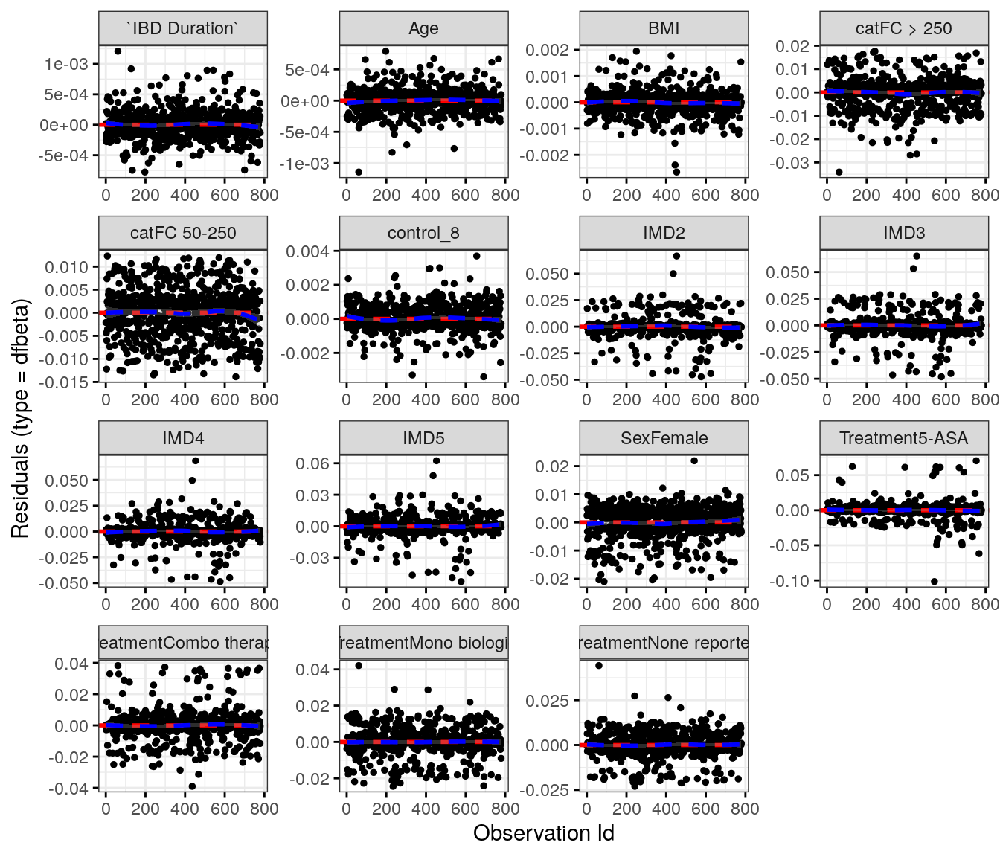
`geom_smooth()` using formula = 'y ~ x'
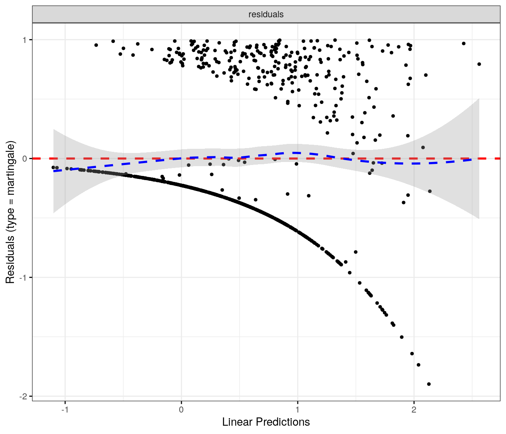
IBD Control VAS
Code
fit.me<-coxph(Surv(softflare_time, softflare)~Sex+cat+IMD+`IBD Duration`+BMI+Treatment+Age+vas_control+frailty(SiteNo), control =coxph.control(outer.max =20), data =flare.cd.df)invisible(cox_summary(fit.me))
Cox model summary:
Variable
HR
Lower 95%
Upper 95%
P-value
SexFemale
2.2982
1.7321
3.0491
0.0000
catFC 50-250
1.3127
0.9852
1.7489
0.0631
catFC > 250
2.2600
1.6390
3.1162
0.0000
IMD2
0.7181
0.4360
1.1829
0.1934
IMD3
0.8002
0.4821
1.3283
0.3887
IMD4
0.8597
0.5319
1.3895
0.5373
IMD5
0.9224
0.5802
1.4664
0.7327
IBD Duration
0.9885
0.9768
1.0004
0.0577
BMI
1.0023
0.9797
1.0255
0.8405
TreatmentMono biologic
1.0721
0.7395
1.5544
0.7132
TreatmentCombo therapy
0.7799
0.4860
1.2517
0.3031
Treatment5-ASA
1.5093
0.8385
2.7170
0.1699
TreatmentNone reported
0.9824
0.6911
1.3965
0.9211
Age
1.0074
0.9981
1.0169
0.1193
vas_control85+
0.6000
0.4663
0.7720
0.0001
Proportional hazards assumption test
Chi-squared statistic
DF
P-value
Sex
0.0028
0.9989
0.9574
cat
0.7396
1.9974
0.6903
IMD
5.9711
3.9910
0.2004
IBD Duration
2.3800
0.9991
0.1228
BMI
1.0571
0.9985
0.3034
Treatment
6.4094
3.9868
0.1694
Age
0.5997
0.9982
0.4380
vas_control
5.6480
0.9978
0.0174
GLOBAL
23.0400
15.4505
0.0958
`geom_smooth()` using formula = 'y ~ x'
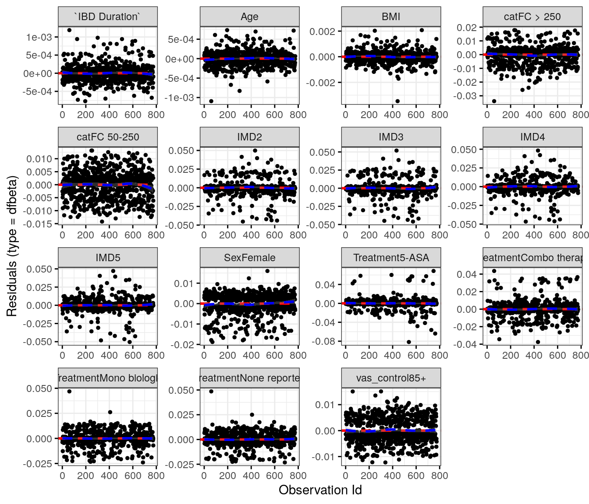
`geom_smooth()` using formula = 'y ~ x'
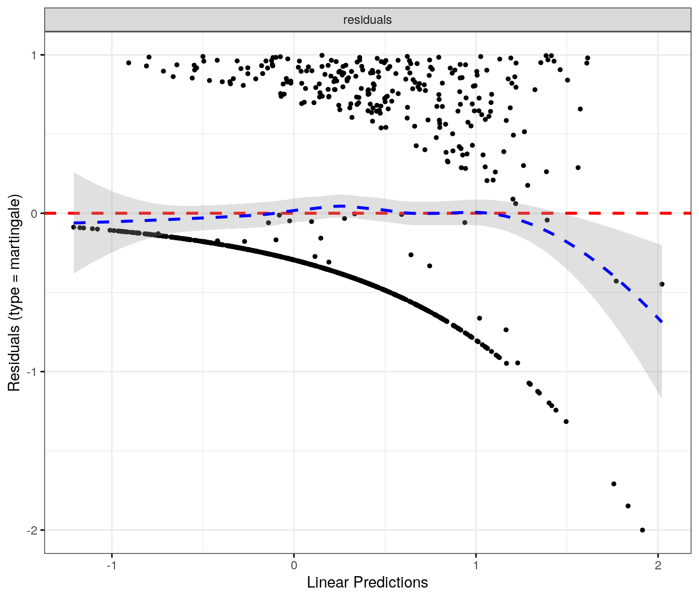
Previous surgery
Code
fit.me<-coxph(Surv(softflare_time, softflare)~Sex+cat+IMD+`IBD Duration`+BMI+Treatment+Age+Surgery+frailty(SiteNo), control =coxph.control(outer.max =20), data =flare.cd.df)invisible(cox_summary(fit.me))
Cox model summary:
Variable
HR
Lower 95%
Upper 95%
P-value
SexFemale
2.1614
1.6662
2.8038
0.0000
catFC 50-250
1.5087
1.1533
1.9736
0.0027
catFC > 250
2.1917
1.6122
2.9796
0.0000
IMD2
0.8105
0.5092
1.2902
0.3757
IMD3
0.7676
0.4740
1.2429
0.2821
IMD4
0.8583
0.5444
1.3532
0.5106
IMD5
0.8803
0.5681
1.3641
0.5683
IBD Duration
0.9923
0.9804
1.0044
0.2141
BMI
1.0061
0.9842
1.0284
0.5886
TreatmentMono biologic
0.9472
0.6639
1.3513
0.7649
TreatmentCombo therapy
0.6983
0.4532
1.0761
0.1036
Treatment5-ASA
1.3343
0.7494
2.3758
0.3272
TreatmentNone reported
0.9486
0.6820
1.3193
0.7537
Age
1.0052
0.9962
1.0143
0.2572
SurgeryYes
1.1234
0.8754
1.4416
0.3606
Proportional hazards assumption test
Chi-squared statistic
DF
P-value
Sex
0.3388
0.9914
0.5570
cat
1.5116
1.9845
0.4660
IMD
5.5692
3.9560
0.2289
IBD Duration
3.4573
0.9954
0.0626
BMI
2.1444
0.9904
0.1414
Treatment
3.3457
3.9107
0.4878
Age
2.2642
0.9915
0.1310
Surgery
0.9573
0.9917
0.3251
GLOBAL
18.2683
19.7881
0.5561
`geom_smooth()` using formula = 'y ~ x'
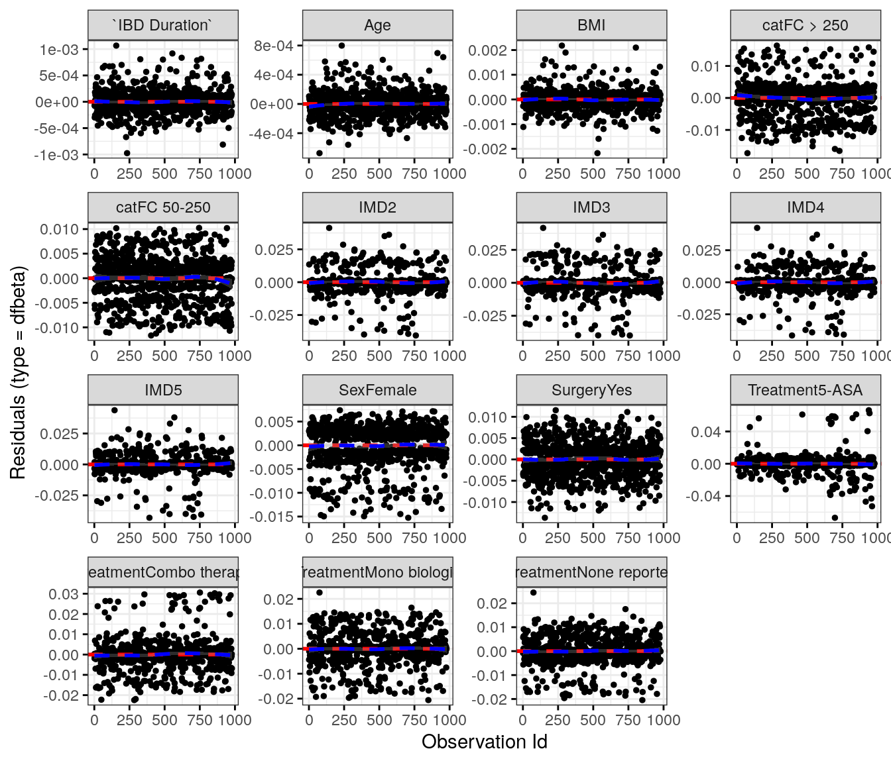
`geom_smooth()` using formula = 'y ~ x'
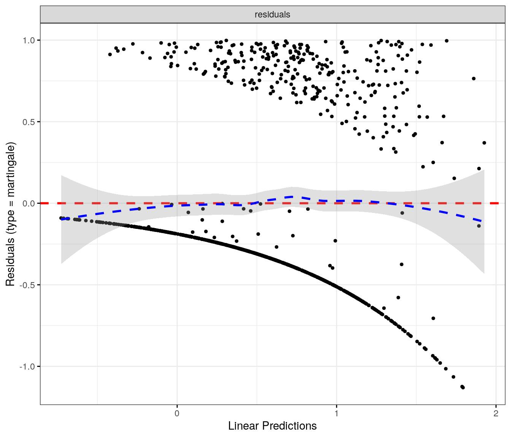
Montreal location
Code
fit.me<-coxph(Surv(softflare_time, softflare)~Sex+cat+IMD+`IBD Duration`+BMI+Treatment+Age+Location+frailty(SiteNo), control =coxph.control(outer.max =20), data =flare.cd.df)invisible(cox_summary(fit.me))
Cox model summary:
Variable
HR
Lower 95%
Upper 95%
P-value
SexFemale
2.1798
1.6498
2.8800
0.0000
catFC 50-250
1.5990
1.1978
2.1346
0.0014
catFC > 250
2.2763
1.6429
3.1539
0.0000
IMD2
0.8669
0.5308
1.4156
0.5680
IMD3
0.8129
0.4875
1.3557
0.4274
IMD4
0.8865
0.5467
1.4376
0.6254
IMD5
0.9033
0.5665
1.4402
0.6691
IBD Duration
0.9912
0.9789
1.0036
0.1628
BMI
1.0056
0.9826
1.0290
0.6378
TreatmentMono biologic
0.9615
0.6648
1.3905
0.8347
TreatmentCombo therapy
0.6733
0.4271
1.0613
0.0884
Treatment5-ASA
1.3604
0.7381
2.5073
0.3238
TreatmentNone reported
0.9027
0.6358
1.2818
0.5673
Age
1.0078
0.9983
1.0175
0.1091
LocationL2
0.8025
0.5737
1.1226
0.1989
LocationL3
1.1264
0.8342
1.5210
0.4371
LocationL4 only
0.9506
0.2968
3.0448
0.9320
Proportional hazards assumption test
Chi-squared statistic
DF
P-value
Sex
0.3013
0.9948
0.5809
cat
2.3312
1.9920
0.3102
IMD
6.2866
3.9762
0.1766
IBD Duration
3.1256
0.9966
0.0767
BMI
1.9769
0.9937
0.1585
Treatment
5.9104
3.9477
0.2007
Age
1.4629
0.9962
0.2255
Location
1.3563
2.9811
0.7126
GLOBAL
23.6618
19.0505
0.2118
`geom_smooth()` using formula = 'y ~ x'
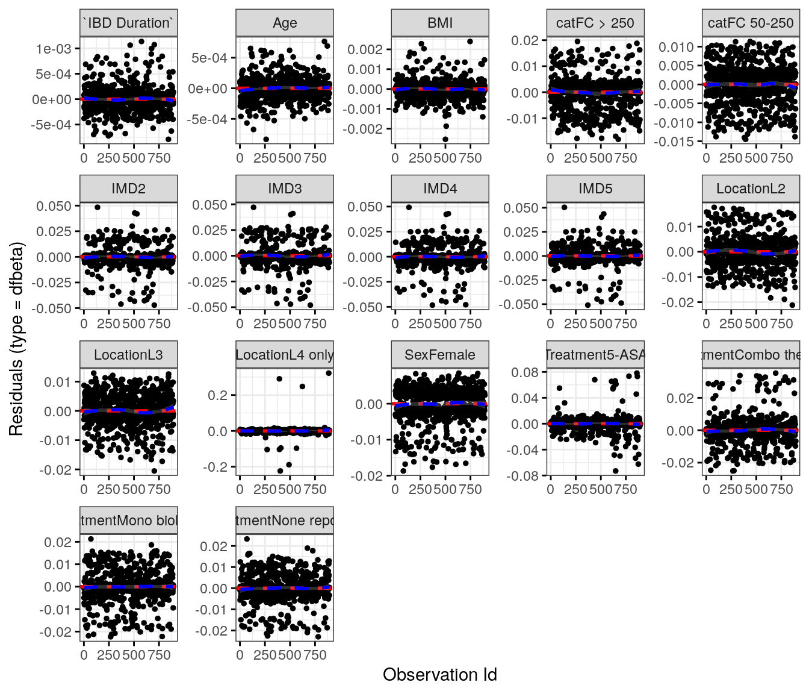
`geom_smooth()` using formula = 'y ~ x'
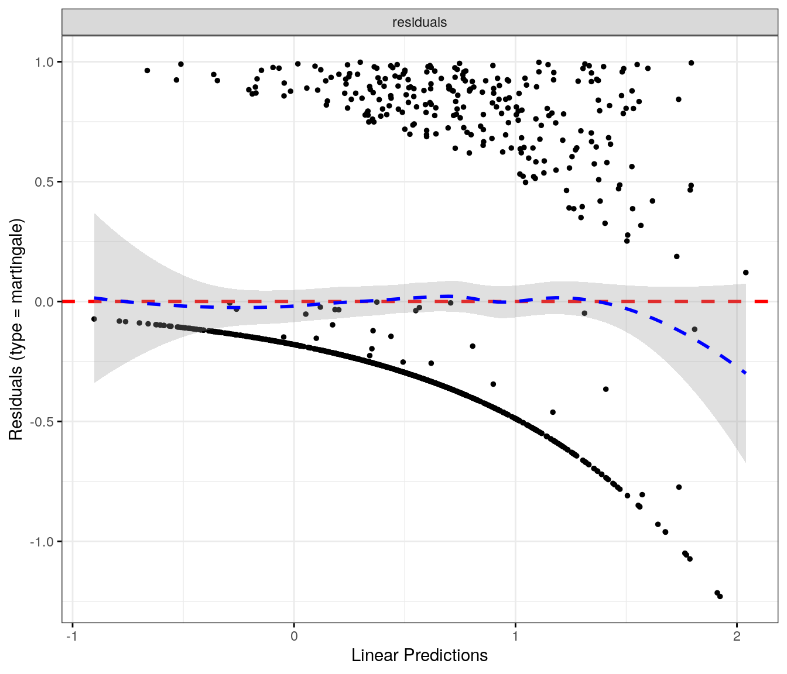
Montreal L4 presence
Code
fit.me<-coxph(Surv(softflare_time, softflare)~Sex+cat+IMD+`IBD Duration`+BMI+Treatment+Age+L4+frailty(SiteNo), control =coxph.control(outer.max =20), data =flare.cd.df)invisible(cox_summary(fit.me))
Cox model summary:
Variable
HR
Lower 95%
Upper 95%
P-value
SexFemale
2.1709
1.6432
2.8680
0.0000
catFC 50-250
1.5972
1.1963
2.1323
0.0015
catFC > 250
2.1855
1.5764
3.0300
0.0000
IMD2
0.8134
0.4973
1.3304
0.4106
IMD3
0.7575
0.4543
1.2632
0.2871
IMD4
0.8463
0.5213
1.3739
0.4996
IMD5
0.8452
0.5297
1.3485
0.4804
IBD Duration
0.9917
0.9795
1.0041
0.1871
BMI
1.0060
0.9828
1.0296
0.6158
TreatmentMono biologic
0.9471
0.6547
1.3702
0.7731
TreatmentCombo therapy
0.6733
0.4272
1.0613
0.0884
Treatment5-ASA
1.2960
0.7056
2.3804
0.4032
TreatmentNone reported
0.9088
0.6401
1.2905
0.5931
Age
1.0074
0.9978
1.0170
0.1302
L4Present
1.4018
0.9480
2.0730
0.0906
Proportional hazards assumption test
Chi-squared statistic
DF
P-value
Sex
0.2963
0.9946
0.5840
cat
2.4313
1.9900
0.2946
IMD
6.4263
3.9729
0.1671
IBD Duration
3.0585
0.9973
0.0800
BMI
2.0835
0.9940
0.1478
Treatment
5.6189
3.9432
0.2233
Age
1.5146
0.9948
0.2171
L4
4.3385
0.9926
0.0368
GLOBAL
26.8201
17.4663
0.0703
`geom_smooth()` using formula = 'y ~ x'
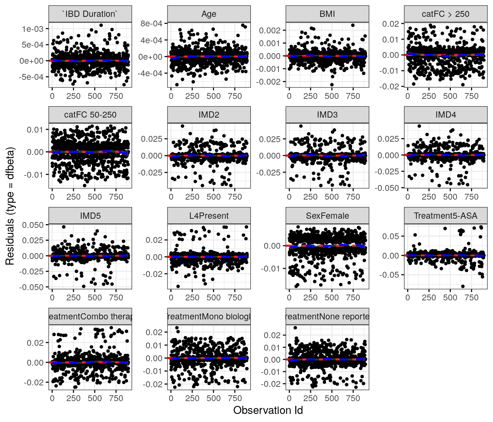
`geom_smooth()` using formula = 'y ~ x'
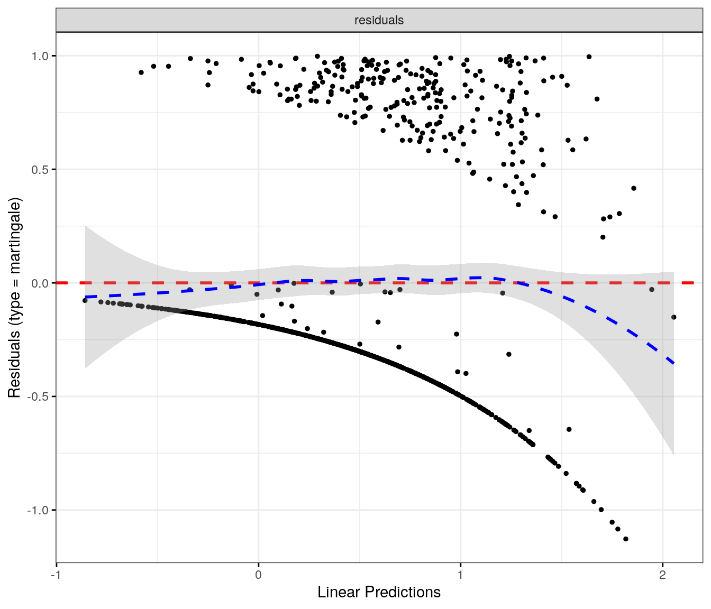
Montreal behaviour
Code
fit.me<-coxph(Surv(softflare_time, softflare)~Sex+cat+IMD+`IBD Duration`+BMI+Treatment+Age+Behaviour+frailty(SiteNo), control =coxph.control(outer.max =20), data =flare.cd.df)invisible(cox_summary(fit.me))
Cox model summary:
Variable
HR
Lower 95%
Upper 95%
P-value
SexFemale
2.2528
1.6914
3.0005
0.0000
catFC 50-250
1.5728
1.1721
2.1105
0.0025
catFC > 250
2.1176
1.5163
2.9573
0.0000
IMD2
0.8569
0.5202
1.4116
0.5442
IMD3
0.7345
0.4337
1.2438
0.2509
IMD4
0.9233
0.5614
1.5185
0.7533
IMD5
0.9321
0.5790
1.5007
0.7724
IBD Duration
0.9906
0.9780
1.0034
0.1485
BMI
1.0040
0.9800
1.0285
0.7475
TreatmentMono biologic
0.9358
0.6456
1.3562
0.7258
TreatmentCombo therapy
0.6465
0.4055
1.0307
0.0668
Treatment5-ASA
1.2600
0.6823
2.3270
0.4602
TreatmentNone reported
0.8363
0.5854
1.1949
0.3263
Age
1.0056
0.9958
1.0154
0.2631
BehaviourB2
1.1609
0.8572
1.5722
0.3351
BehaviourB3
0.7813
0.4760
1.2826
0.3292
Proportional hazards assumption test
Chi-squared statistic
DF
P-value
Sex
0.2640
0.9936
0.6047
cat
2.5321
1.9892
0.2799
IMD
5.2296
3.9699
0.2610
IBD Duration
2.7026
0.9956
0.0996
BMI
1.3795
0.9924
0.2382
Treatment
2.7420
3.9287
0.5907
Age
2.3574
0.9941
0.1237
Behaviour
2.0665
1.9901
0.3538
GLOBAL
19.7745
18.8200
0.3969
`geom_smooth()` using formula = 'y ~ x'
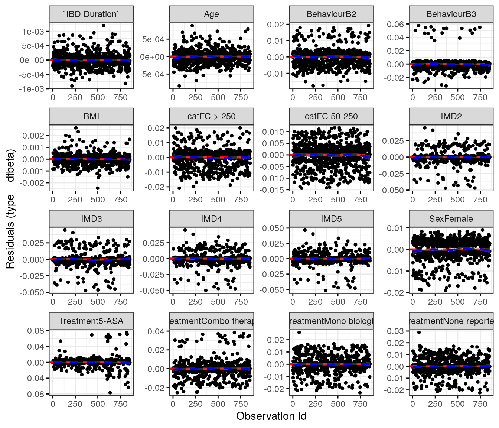
`geom_smooth()` using formula = 'y ~ x'
Perianal disease
Code
fit.me<-coxph(Surv(softflare_time, softflare)~Sex+cat+IMD+`IBD Duration`+BMI+Treatment+Age+Perianal+frailty(SiteNo), control =coxph.control(outer.max =20), data =flare.cd.df)invisible(cox_summary(fit.me))
Cox model summary:
Variable
HR
Lower 95%
Upper 95%
P-value
SexFemale
2.2044
1.6637
2.9209
0.0000
catFC 50-250
1.5646
1.1685
2.0950
0.0027
catFC > 250
2.1640
1.5614
2.9990
0.0000
IMD2
0.9120
0.5569
1.4936
0.7145
IMD3
0.8242
0.4927
1.3788
0.4615
IMD4
0.8757
0.5356
1.4318
0.5967
IMD5
0.8869
0.5536
1.4207
0.6175
IBD Duration
0.9850
0.9727
0.9975
0.0190
BMI
0.9953
0.9714
1.0199
0.7064
TreatmentMono biologic
0.9470
0.6530
1.3734
0.7739
TreatmentCombo therapy
0.6016
0.3784
0.9563
0.0316
Treatment5-ASA
1.4594
0.7768
2.7418
0.2400
TreatmentNone reported
0.9591
0.6741
1.3644
0.8162
Age
1.0074
0.9977
1.0171
0.1374
PerianalYes
1.4876
1.1455
1.9319
0.0029
Proportional hazards assumption test
Chi-squared statistic
DF
P-value
Sex
0.1272
0.9958
0.7197
cat
3.3291
1.9921
0.1882
IMD
6.1545
3.9768
0.1857
IBD Duration
3.1836
0.9968
0.0741
BMI
2.4785
0.9941
0.1145
Treatment
2.0844
3.9488
0.7129
Age
0.5700
0.9954
0.4485
Perianal
0.0856
0.9950
0.7679
GLOBAL
18.3080
16.8199
0.3580
`geom_smooth()` using formula = 'y ~ x'
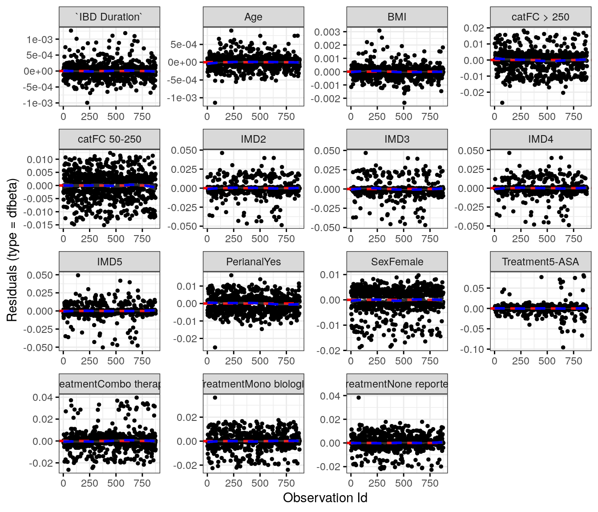
`geom_smooth()` using formula = 'y ~ x'
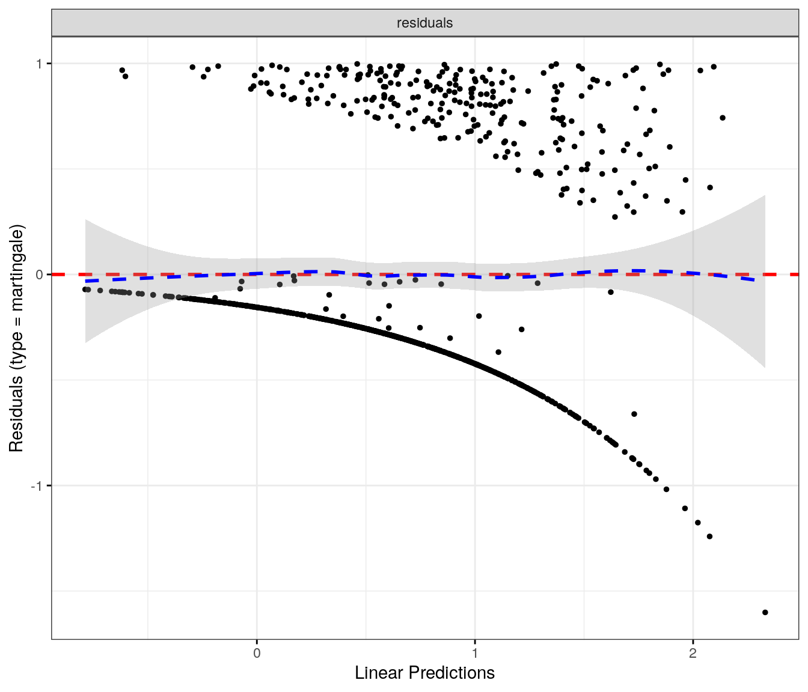
Objective flare
IBD Control-8
Code
fit.me<-coxph(Surv(hardflare_time, hardflare)~Sex+cat+IMD+`IBD Duration`+BMI+Treatment+Age+control_8+frailty(SiteNo), control =coxph.control(outer.max =20), data =flare.cd.df)invisible(cox_summary(fit.me))
Cox model summary:
Variable
HR
Lower 95%
Upper 95%
P-value
SexFemale
1.6541
1.1776
2.3236
0.0037
catFC 50-250
1.9360
1.3264
2.8257
0.0006
catFC > 250
3.6730
2.4449
5.5180
0.0000
IMD2
0.7537
0.3989
1.4240
0.3837
IMD3
0.7606
0.3986
1.4515
0.4066
IMD4
0.8737
0.4728
1.6147
0.6665
IMD5
0.9585
0.5301
1.7330
0.8884
IBD Duration
0.9831
0.9674
0.9991
0.0381
BMI
1.0159
0.9871
1.0455
0.2818
TreatmentMono biologic
0.9843
0.6334
1.5294
0.9438
TreatmentCombo therapy
0.7176
0.4058
1.2688
0.2538
Treatment5-ASA
1.3625
0.5994
3.0975
0.4603
TreatmentNone reported
0.7444
0.4872
1.1373
0.1723
Age
0.9937
0.9822
1.0054
0.2918
control_8
0.9878
0.9402
1.0378
0.6252
Proportional hazards assumption test
Chi-squared statistic
DF
P-value
Sex
1.5368
0.9967
0.2143
cat
8.2858
1.9973
0.0158
IMD
3.7556
3.9851
0.4378
IBD Duration
0.1345
0.9986
0.7132
BMI
3.3280
0.9983
0.0679
Treatment
3.6997
3.9751
0.4444
Age
2.6202
0.9980
0.1052
control_8
2.5673
0.9953
0.1084
GLOBAL
24.4616
15.7546
0.0740
`geom_smooth()` using formula = 'y ~ x'
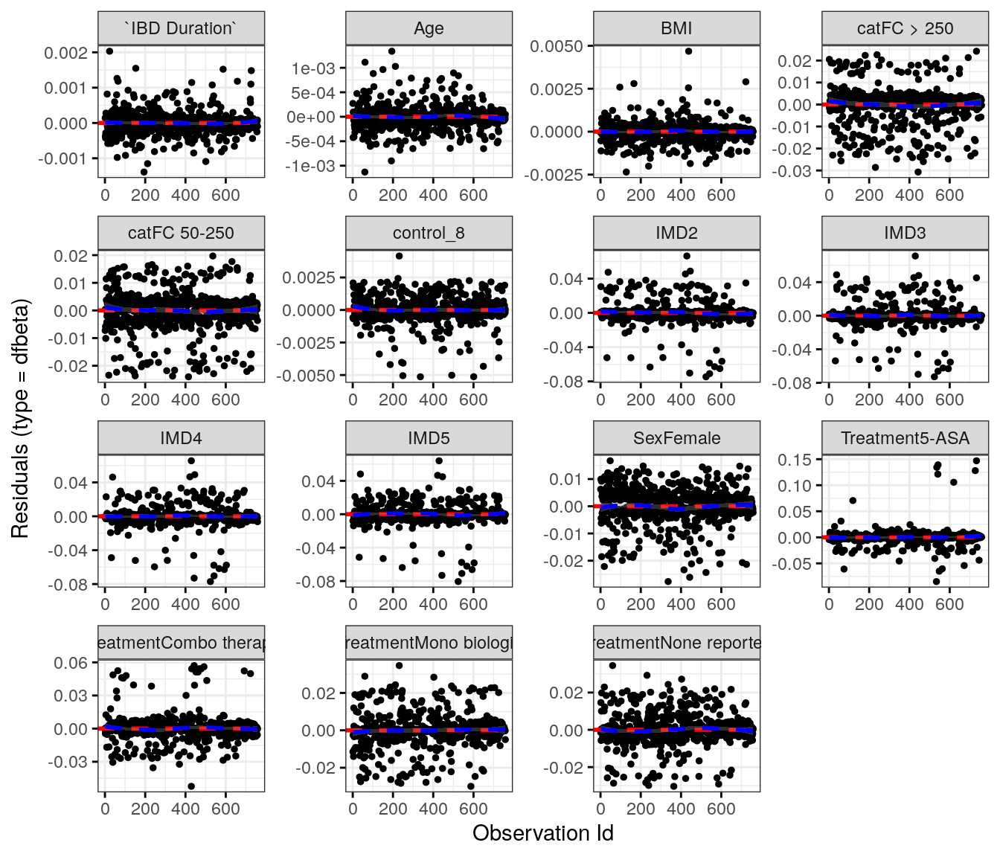
`geom_smooth()` using formula = 'y ~ x'
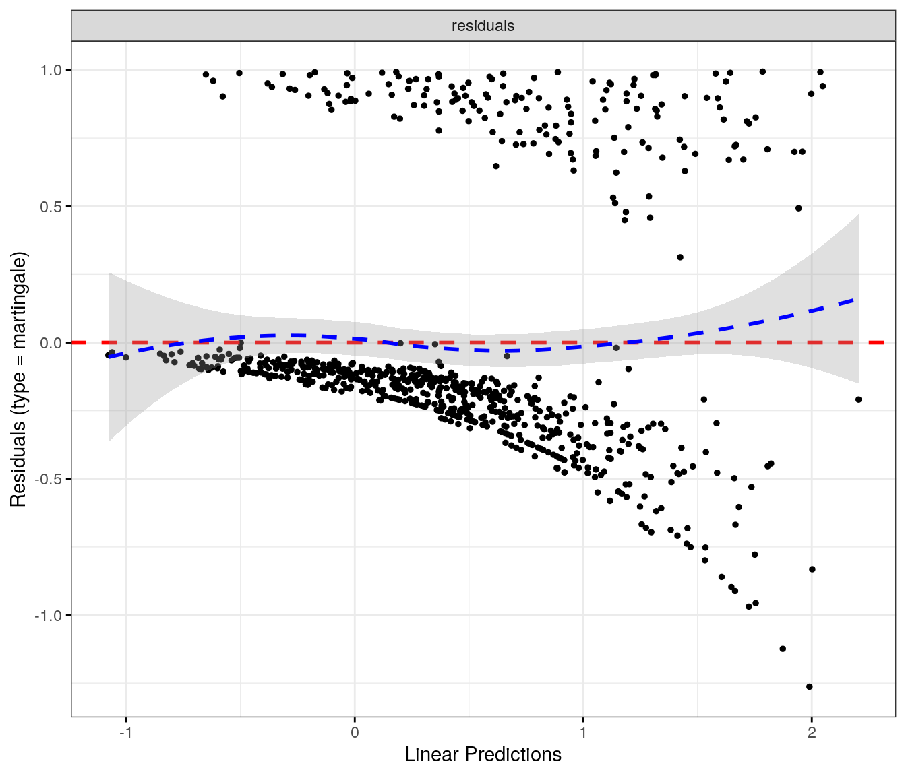
IBD Control VAS
Code
fit.me<-coxph(Surv(hardflare_time, hardflare)~Sex+cat+IMD+`IBD Duration`+BMI+Treatment+Age+vas_control+frailty(SiteNo), control =coxph.control(outer.max =20), data =flare.cd.df)invisible(cox_summary(fit.me))
Cox model summary:
Variable
HR
Lower 95%
Upper 95%
P-value
SexFemale
1.6595
1.1823
2.3294
0.0034
catFC 50-250
1.8986
1.2964
2.7804
0.0010
catFC > 250
3.5997
2.3917
5.4178
0.0000
IMD2
0.7476
0.3939
1.4191
0.3737
IMD3
0.7574
0.3966
1.4464
0.4000
IMD4
0.8255
0.4440
1.5348
0.5444
IMD5
0.9431
0.5225
1.7022
0.8458
IBD Duration
0.9830
0.9671
0.9992
0.0396
BMI
1.0159
0.9868
1.0459
0.2865
TreatmentMono biologic
1.0043
0.6436
1.5671
0.9850
TreatmentCombo therapy
0.7420
0.4178
1.3180
0.3087
Treatment5-ASA
1.3934
0.6111
3.1769
0.4302
TreatmentNone reported
0.7494
0.4886
1.1494
0.1862
Age
0.9933
0.9816
1.0051
0.2667
vas_control85+
0.9782
0.7022
1.3625
0.8961
Proportional hazards assumption test
Chi-squared statistic
DF
P-value
Sex
1.6320
0.9949
0.2002
cat
9.3063
1.9967
0.0095
IMD
3.6734
3.9797
0.4489
IBD Duration
0.0282
0.9980
0.8662
BMI
3.9058
0.9977
0.0480
Treatment
3.9109
3.9673
0.4133
Age
2.6417
0.9972
0.1037
vas_control
0.4292
0.9969
0.5111
GLOBAL
25.8796
16.0653
0.0570
`geom_smooth()` using formula = 'y ~ x'
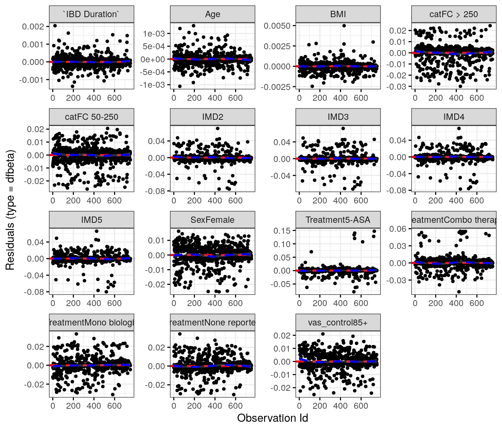
`geom_smooth()` using formula = 'y ~ x'
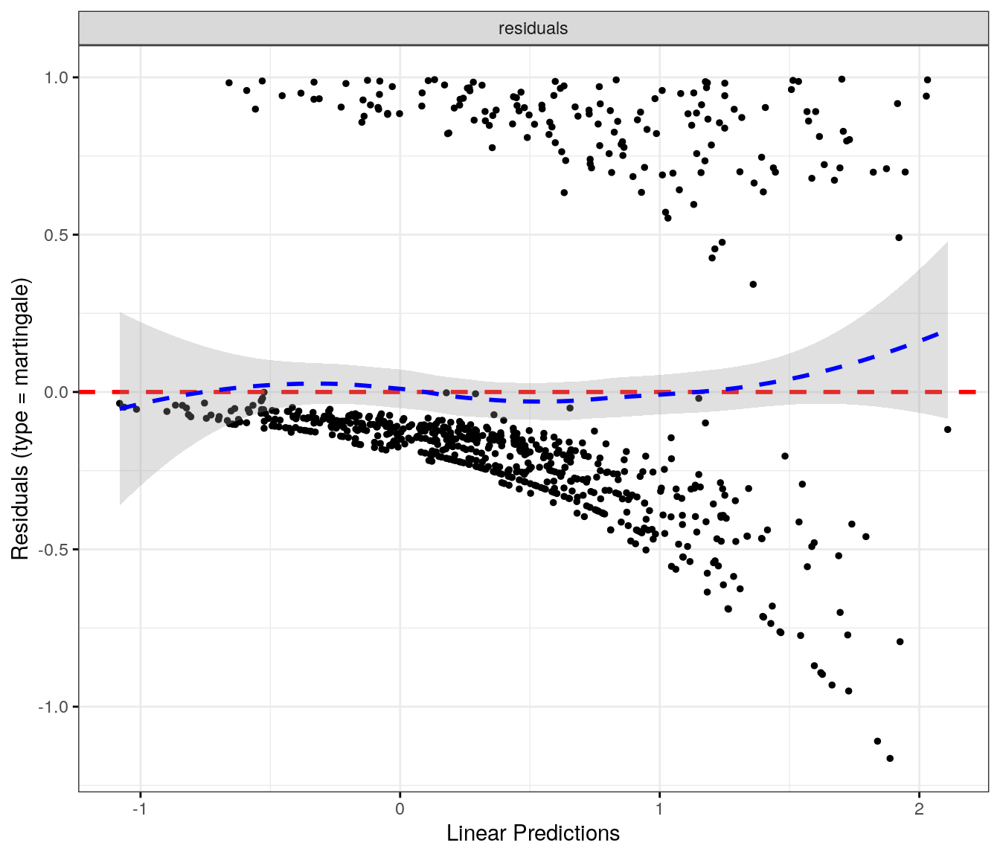
Previous surgery
Code
fit.me<-coxph(Surv(hardflare_time, hardflare)~Sex+cat+IMD+`IBD Duration`+BMI+Treatment+Age+Surgery+frailty(SiteNo), control =coxph.control(outer.max =20), data =flare.cd.df)invisible(cox_summary(fit.me))
Cox model summary:
Variable
HR
Lower 95%
Upper 95%
P-value
SexFemale
1.7063
1.2621
2.3070
0.0005
catFC 50-250
2.0496
1.4628
2.8717
0.0000
catFC > 250
3.2225
2.2238
4.6697
0.0000
IMD2
0.9673
0.5460
1.7135
0.9092
IMD3
0.8549
0.4699
1.5555
0.6077
IMD4
0.9144
0.5137
1.6277
0.7610
IMD5
1.0694
0.6188
1.8479
0.8101
IBD Duration
0.9879
0.9725
1.0035
0.1287
BMI
1.0160
0.9900
1.0427
0.2310
TreatmentMono biologic
0.9737
0.6504
1.4575
0.8968
TreatmentCombo therapy
0.6387
0.3846
1.0606
0.0832
Treatment5-ASA
1.2006
0.5485
2.6277
0.6474
TreatmentNone reported
0.7371
0.4986
1.0896
0.1261
Age
0.9884
0.9778
0.9992
0.0350
SurgeryYes
0.8828
0.6539
1.1920
0.4159
Proportional hazards assumption test
Chi-squared statistic
DF
P-value
Sex
0.3484
0.9859
0.5492
cat
7.4677
1.9869
0.0236
IMD
2.2132
3.9502
0.6893
IBD Duration
0.1496
0.9966
0.6976
BMI
4.5520
0.9899
0.0324
Treatment
3.4629
3.8998
0.4680
Age
4.4954
0.9917
0.0336
Surgery
3.2762
0.9926
0.0696
GLOBAL
25.5592
21.0557
0.2263
`geom_smooth()` using formula = 'y ~ x'
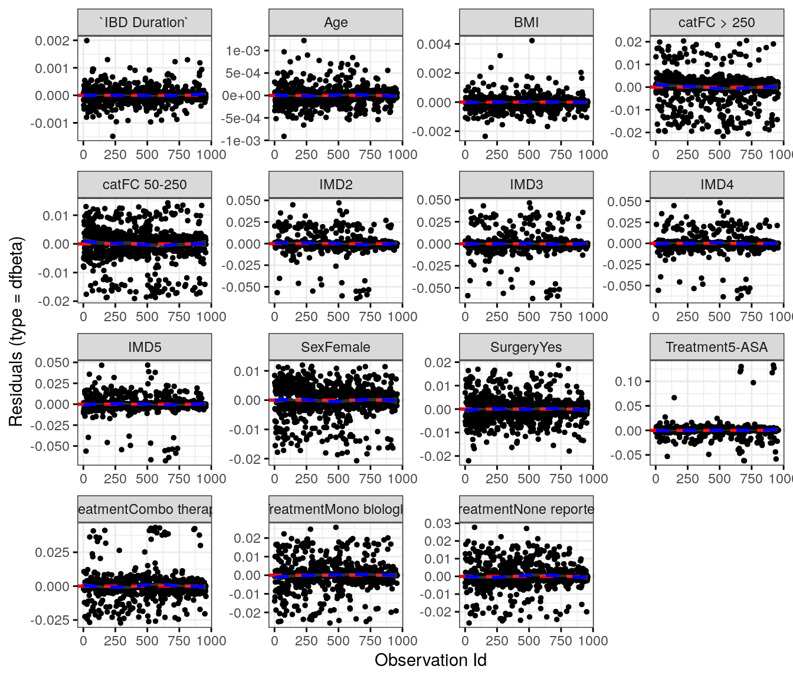
`geom_smooth()` using formula = 'y ~ x'
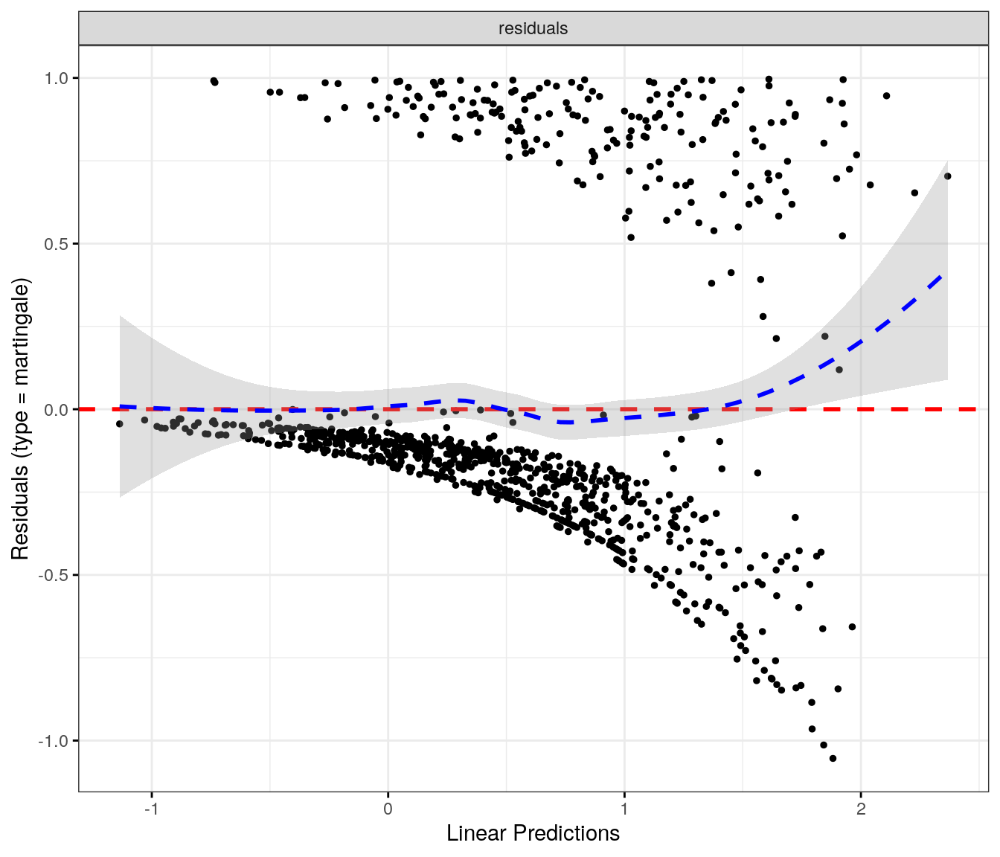
Montreal location
Code
fit.me<-coxph(Surv(hardflare_time, hardflare)~Sex+cat+IMD+`IBD Duration`+BMI+Treatment+Age+Location+frailty(SiteNo), control =coxph.control(outer.max =20), data =flare.cd.df)invisible(cox_summary(fit.me))
Cox model summary:
Variable
HR
Lower 95%
Upper 95%
P-value
SexFemale
1.6164
1.1772
2.2193
0.0030
catFC 50-250
1.9638
1.3758
2.8029
0.0002
catFC > 250
3.1927
2.1725
4.6921
0.0000
IMD2
0.9011
0.4947
1.6413
0.7335
IMD3
0.8958
0.4817
1.6656
0.7279
IMD4
0.9706
0.5345
1.7624
0.9218
IMD5
1.1257
0.6357
1.9934
0.6847
IBD Duration
0.9853
0.9697
1.0011
0.0681
BMI
1.0171
0.9901
1.0448
0.2160
TreatmentMono biologic
0.9848
0.6488
1.4948
0.9428
TreatmentCombo therapy
0.6232
0.3696
1.0509
0.0761
Treatment5-ASA
1.3422
0.6047
2.9791
0.4694
TreatmentNone reported
0.6601
0.4350
1.0016
0.0509
Age
0.9903
0.9791
1.0017
0.0951
LocationL2
1.1934
0.8012
1.7774
0.3844
LocationL3
1.2251
0.8404
1.7860
0.2911
LocationL4 only
1.1608
0.2746
4.9062
0.8393
Proportional hazards assumption test
Chi-squared statistic
DF
P-value
Sex
0.2665
0.9830
0.5986
cat
5.0495
1.9873
0.0792
IMD
2.9329
3.9494
0.5612
IBD Duration
0.1756
0.9954
0.6734
BMI
3.1934
0.9905
0.0729
Treatment
3.5121
3.8864
0.4584
Age
6.5989
0.9917
0.0101
Location
0.6136
2.9546
0.8885
GLOBAL
23.0040
23.1768
0.4710
`geom_smooth()` using formula = 'y ~ x'
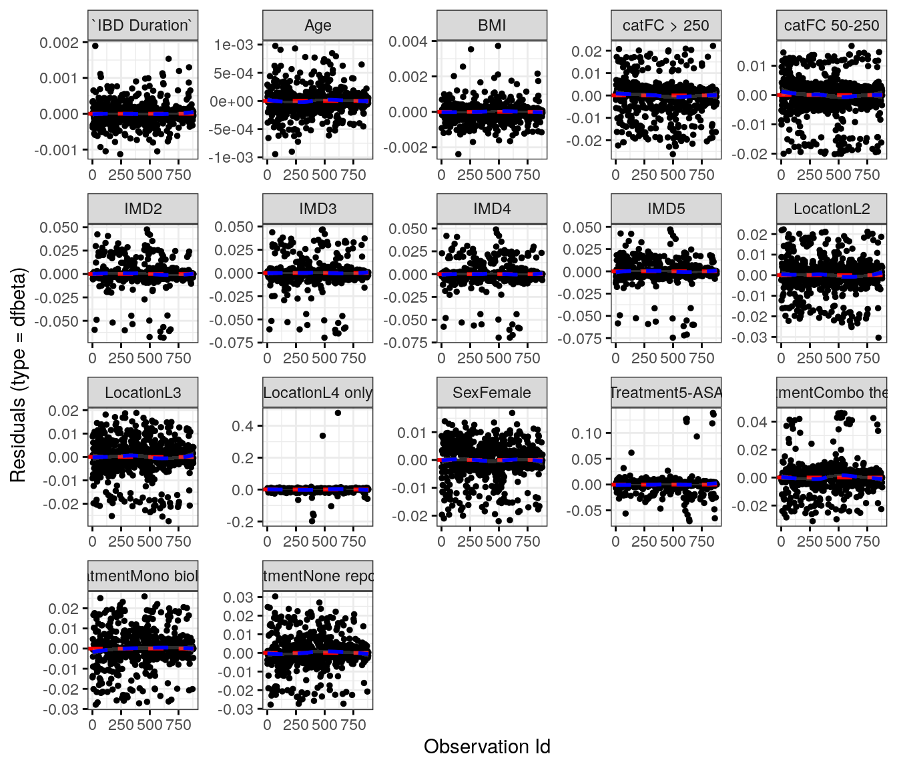
`geom_smooth()` using formula = 'y ~ x'
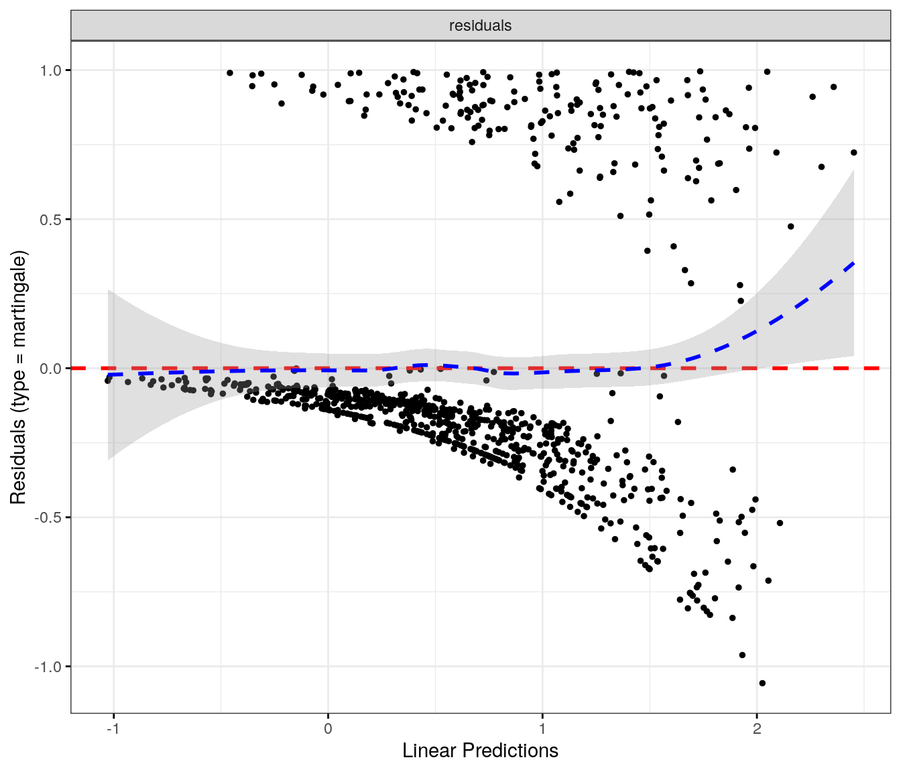
Montreal L4 presence
Code
fit.me<-coxph(Surv(hardflare_time, hardflare)~Sex+cat+IMD+`IBD Duration`+BMI+Treatment+Age+L4+frailty(SiteNo), control =coxph.control(outer.max =20), data =flare.cd.df)invisible(cox_summary(fit.me))
Cox model summary:
Variable
HR
Lower 95%
Upper 95%
P-value
SexFemale
1.6360
1.1925
2.2445
0.0023
catFC 50-250
1.9695
1.3797
2.8115
0.0002
catFC > 250
3.1553
2.1455
4.6404
0.0000
IMD2
0.8635
0.4736
1.5742
0.6319
IMD3
0.8420
0.4526
1.5666
0.5872
IMD4
0.9260
0.5092
1.6838
0.8010
IMD5
1.0554
0.5953
1.8713
0.8535
IBD Duration
0.9848
0.9693
1.0006
0.0589
BMI
1.0177
0.9907
1.0454
0.2007
TreatmentMono biologic
0.9643
0.6343
1.4661
0.8650
TreatmentCombo therapy
0.6258
0.3711
1.0553
0.0787
Treatment5-ASA
1.3677
0.6196
3.0189
0.4382
TreatmentNone reported
0.6540
0.4315
0.9914
0.0454
Age
0.9915
0.9803
1.0028
0.1419
L4Present
1.3791
0.8798
2.1617
0.1610
Proportional hazards assumption test
Chi-squared statistic
DF
P-value
Sex
0.2820
0.9843
0.5888
cat
5.1952
1.9856
0.0735
IMD
3.1652
3.9484
0.5225
IBD Duration
0.1867
0.9963
0.6641
BMI
3.1317
0.9900
0.0757
Treatment
3.6132
3.8867
0.4435
Age
6.6664
0.9912
0.0097
L4
0.0262
0.9780
0.8650
GLOBAL
23.7261
21.7383
0.3470
`geom_smooth()` using formula = 'y ~ x'
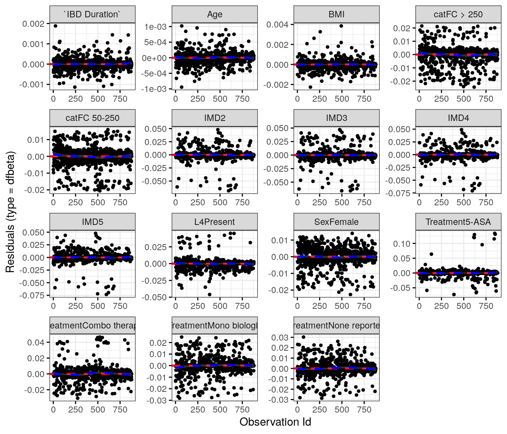
`geom_smooth()` using formula = 'y ~ x'
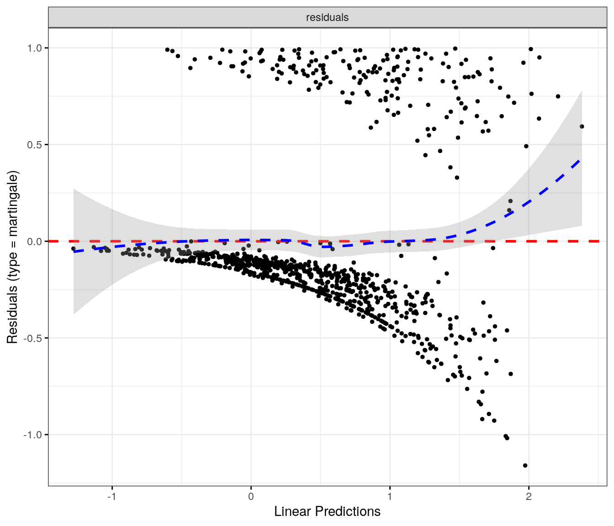
Montreal behaviour
Code
fit.me<-coxph(Surv(hardflare_time, hardflare)~Sex+cat+IMD+`IBD Duration`+BMI+Treatment+Age+Behaviour+frailty(SiteNo), control =coxph.control(outer.max =20), data =flare.cd.df)invisible(cox_summary(fit.me))
Cox model summary:
Variable
HR
Lower 95%
Upper 95%
P-value
SexFemale
1.7552
1.2730
2.4202
0.0006
catFC 50-250
2.1619
1.5036
3.1084
0.0000
catFC > 250
3.4054
2.2930
5.0575
0.0000
IMD2
0.9987
0.5421
1.8398
0.9966
IMD3
0.8851
0.4677
1.6749
0.7076
IMD4
1.0399
0.5618
1.9247
0.9009
IMD5
1.1860
0.6610
2.1281
0.5673
IBD Duration
0.9842
0.9683
1.0004
0.0561
BMI
1.0176
0.9900
1.0459
0.2132
TreatmentMono biologic
0.9511
0.6225
1.4531
0.8167
TreatmentCombo therapy
0.6567
0.3881
1.1112
0.1171
Treatment5-ASA
1.3831
0.6206
3.0824
0.4277
TreatmentNone reported
0.6731
0.4416
1.0259
0.0656
Age
0.9909
0.9797
1.0022
0.1143
BehaviourB2
1.1275
0.7814
1.6269
0.5211
BehaviourB3
0.9689
0.5583
1.6815
0.9105
Proportional hazards assumption test
Chi-squared statistic
DF
P-value
Sex
0.1413
0.9845
0.7008
cat
4.7787
1.9867
0.0906
IMD
2.2188
3.9518
0.6885
IBD Duration
0.4967
0.9944
0.4787
BMI
2.9289
0.9912
0.0860
Treatment
3.5840
3.8782
0.4465
Age
4.8157
0.9909
0.0278
Behaviour
3.2280
1.9833
0.1966
GLOBAL
22.9547
21.8830
0.3974
`geom_smooth()` using formula = 'y ~ x'
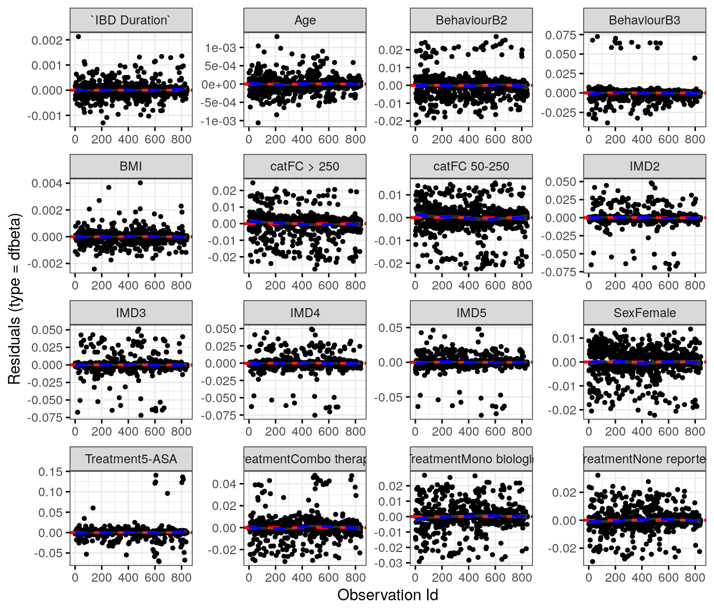
`geom_smooth()` using formula = 'y ~ x'
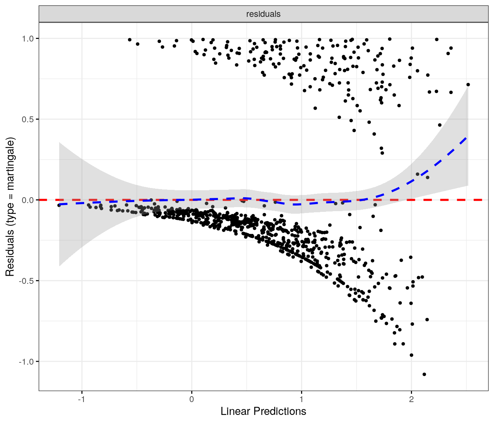
Perianal disease
Code
fit.me<-coxph(Surv(hardflare_time, hardflare)~Sex+cat+IMD+`IBD Duration`+BMI+Treatment+Age+Perianal+frailty(SiteNo), control =coxph.control(outer.max =20), data =flare.cd.df)invisible(cox_summary(fit.me))
Cox model summary:
Variable
HR
Lower 95%
Upper 95%
P-value
SexFemale
1.6224
1.1862
2.2191
0.0025
catFC 50-250
1.9451
1.3659
2.7699
0.0002
catFC > 250
2.9845
2.0352
4.3766
0.0000
IMD2
1.0469
0.5737
1.9104
0.8813
IMD3
0.9910
0.5317
1.8473
0.9774
IMD4
0.9513
0.5170
1.7503
0.8724
IMD5
1.0728
0.6018
1.9124
0.8118
IBD Duration
0.9822
0.9666
0.9980
0.0270
BMI
1.0124
0.9847
1.0408
0.3847
TreatmentMono biologic
0.9765
0.6412
1.4872
0.9119
TreatmentCombo therapy
0.6243
0.3687
1.0572
0.0796
Treatment5-ASA
1.8879
0.8480
4.2030
0.1196
TreatmentNone reported
0.7692
0.5092
1.1619
0.2124
Age
0.9893
0.9780
1.0006
0.0643
PerianalYes
1.2412
0.9115
1.6902
0.1702
Proportional hazards assumption test
Chi-squared statistic
DF
P-value
Sex
0.5730
0.9848
0.4432
cat
5.3420
1.9880
0.0684
IMD
1.7887
3.9568
0.7689
IBD Duration
0.2294
0.9950
0.6299
BMI
3.8347
0.9898
0.0494
Treatment
4.4126
3.8877
0.3375
Age
7.7106
0.9904
0.0054
Perianal
2.9925
0.9900
0.0825
GLOBAL
23.5249
20.5111
0.2903
`geom_smooth()` using formula = 'y ~ x'
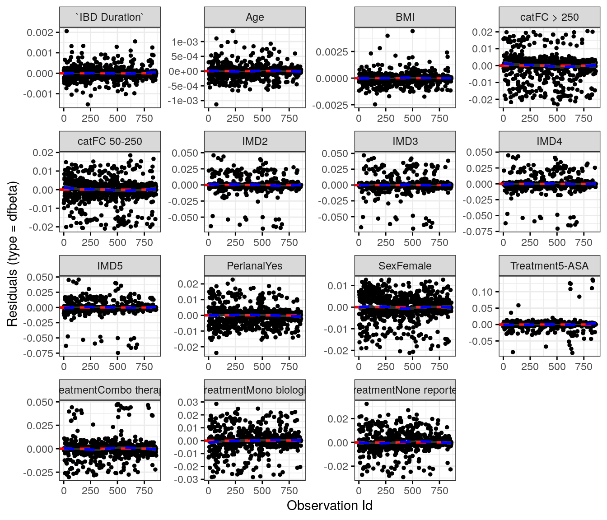
`geom_smooth()` using formula = 'y ~ x'
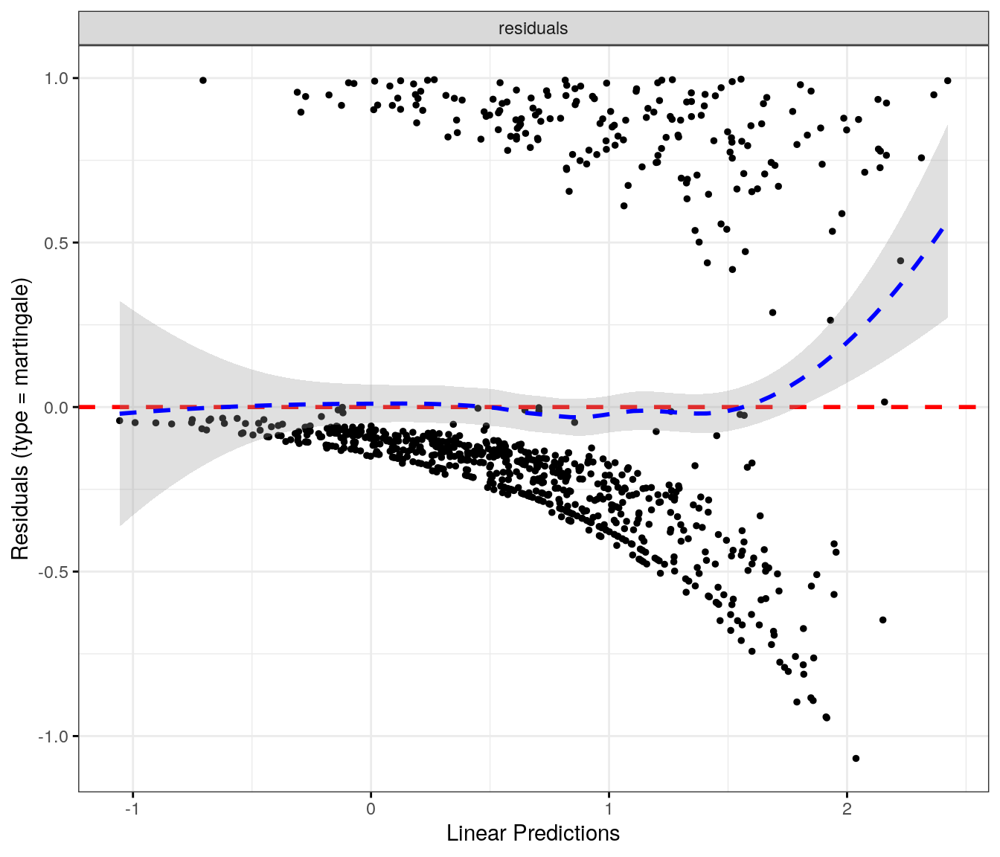
Ulcerative colitis
Patient-reported flare
IBD Control-8
Code
fit.me<-coxph(Surv(softflare_time, softflare)~Sex+cat+IMD+`IBD Duration`+BMI+Treatment+Age+control_8+frailty(SiteNo), control =coxph.control(outer.max =20), data =flare.uc.df)invisible(cox_summary(fit.me))
Cox model summary:
Variable
HR
Lower 95%
Upper 95%
P-value
SexFemale
1.4705
1.1513
1.8782
0.0020
catFC 50-250
1.6275
1.2386
2.1383
0.0005
catFC > 250
2.0514
1.5185
2.7713
0.0000
IMD2
1.3719
0.8068
2.3328
0.2430
IMD3
1.0876
0.6552
1.8052
0.7453
IMD4
1.4622
0.9019
2.3705
0.1232
IMD5
1.2493
0.7723
2.0211
0.3644
IBD Duration
0.9970
0.9837
1.0105
0.6660
BMI
0.9897
0.9662
1.0138
0.3995
TreatmentMono biologic
0.8073
0.5129
1.2706
0.3548
TreatmentCombo therapy
0.4098
0.1995
0.8416
0.0151
Treatment5-ASA
1.3270
0.9419
1.8697
0.1057
TreatmentNone reported
1.0908
0.7708
1.5437
0.6236
Age
0.9898
0.9807
0.9989
0.0281
control_8
0.9224
0.8890
0.9572
0.0000
Proportional hazards assumption test
Chi-squared statistic
DF
P-value
Sex
3.1822
0.9990
0.0743
cat
3.1246
1.9961
0.2091
IMD
3.3548
3.9906
0.4988
IBD Duration
1.4940
0.9985
0.2212
BMI
0.2071
0.9981
0.6483
Treatment
1.7696
3.9821
0.7757
Age
0.0124
0.9954
0.9103
control_8
5.0310
0.9988
0.0248
GLOBAL
17.2676
15.8783
0.3604
`geom_smooth()` using formula = 'y ~ x'
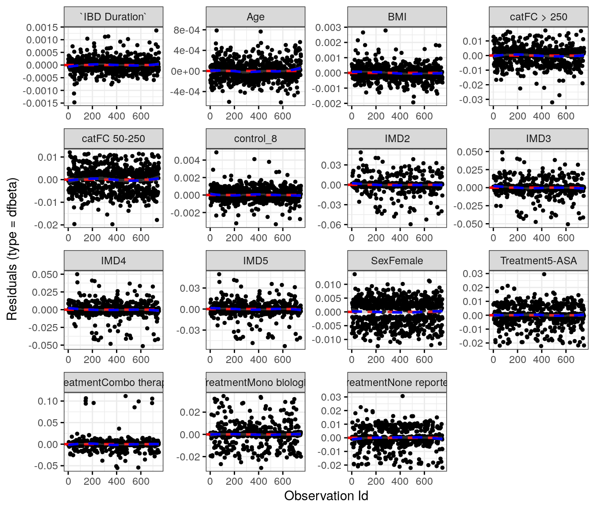
`geom_smooth()` using formula = 'y ~ x'
IBD Control VAS
Code
fit.me<-coxph(Surv(softflare_time, softflare)~Sex+cat+IMD+`IBD Duration`+BMI+Treatment+Age+vas_control+frailty(SiteNo), control =coxph.control(outer.max =20), data =flare.uc.df)invisible(cox_summary(fit.me))
Cox model summary:
Variable
HR
Lower 95%
Upper 95%
P-value
SexFemale
1.5394
1.2059
1.9652
0.0005
catFC 50-250
1.6653
1.2666
2.1897
0.0003
catFC > 250
2.0204
1.4942
2.7318
0.0000
IMD2
1.3921
0.8107
2.3903
0.2304
IMD3
1.1061
0.6603
1.8529
0.7016
IMD4
1.4684
0.8974
2.4028
0.1262
IMD5
1.2553
0.7680
2.0518
0.3645
IBD Duration
0.9966
0.9833
1.0101
0.6195
BMI
0.9917
0.9680
1.0160
0.4995
TreatmentMono biologic
0.7984
0.5071
1.2569
0.3308
TreatmentCombo therapy
0.3892
0.1897
0.7987
0.0101
Treatment5-ASA
1.2486
0.8864
1.7588
0.2041
TreatmentNone reported
1.0493
0.7418
1.4842
0.7856
Age
0.9886
0.9796
0.9977
0.0138
vas_control85+
0.7444
0.5813
0.9534
0.0194
Proportional hazards assumption test
Chi-squared statistic
DF
P-value
Sex
3.0657
0.9987
0.0798
cat
4.1583
1.9963
0.1247
IMD
3.6741
3.9909
0.4505
IBD Duration
1.8560
0.9986
0.1728
BMI
0.4419
0.9983
0.5055
Treatment
2.1132
3.9812
0.7123
Age
0.1468
0.9952
0.6997
vas_control
3.2175
0.9984
0.0727
GLOBAL
18.8708
15.8740
0.2681
`geom_smooth()` using formula = 'y ~ x'
`geom_smooth()` using formula = 'y ~ x'
Montreal extent
Code
fit.me<-coxph(Surv(softflare_time, softflare)~Sex+cat+IMD+`IBD Duration`+BMI+Treatment+Age+Extent+frailty(SiteNo), control =coxph.control(outer.max =20), data =flare.uc.df)invisible(cox_summary(fit.me))
Cox model summary:
Variable
HR
Lower 95%
Upper 95%
P-value
SexFemale
1.3767
1.0672
1.7758
0.0139
catFC 50-250
1.6148
1.2099
2.1551
0.0011
catFC > 250
2.2051
1.6238
2.9943
0.0000
IMD2
1.2645
0.7614
2.1001
0.3646
IMD3
0.9215
0.5585
1.5204
0.7490
IMD4
1.3271
0.8327
2.1149
0.2340
IMD5
1.0640
0.6676
1.6957
0.7943
IBD Duration
1.0004
0.9867
1.0142
0.9584
BMI
0.9778
0.9542
1.0019
0.0706
TreatmentMono biologic
0.7052
0.4300
1.1567
0.1666
TreatmentCombo therapy
0.4102
0.2024
0.8314
0.0134
Treatment5-ASA
1.2768
0.8824
1.8474
0.1949
TreatmentNone reported
1.1744
0.8077
1.7074
0.3999
Age
0.9904
0.9810
1.0000
0.0490
ExtentE2
1.0307
0.7316
1.4520
0.8629
ExtentE3
0.7579
0.5150
1.1154
0.1597
Proportional hazards assumption test
Chi-squared statistic
DF
P-value
Sex
0.0569
0.9882
0.8075
cat
5.1167
1.9643
0.0749
IMD
2.5677
3.9426
0.6237
IBD Duration
3.4467
0.9871
0.0622
BMI
0.3924
0.9896
0.5267
Treatment
2.8080
3.8644
0.5690
Age
0.9359
0.9668
0.3222
Extent
3.7382
1.9695
0.1506
GLOBAL
18.1260
24.7328
0.8269
`geom_smooth()` using formula = 'y ~ x'
`geom_smooth()` using formula = 'y ~ x'
Mayo score
Code
fit.me<-coxph(Surv(softflare_time, softflare)~Sex+cat+IMD+`IBD Duration`+BMI+Treatment+Age+Mayo+frailty(SiteNo), control =coxph.control(outer.max =20), data =flare.uc.df)invisible(cox_summary(fit.me))
Cox model summary:
Variable
HR
Lower 95%
Upper 95%
P-value
SexFemale
1.4398
1.1189
1.8528
0.0046
catFC 50-250
1.5945
1.1950
2.1276
0.0015
catFC > 250
2.2595
1.6425
3.1083
0.0000
IMD2
1.3074
0.7584
2.2539
0.3346
IMD3
0.9626
0.5670
1.6342
0.8878
IMD4
1.3455
0.8164
2.2175
0.2444
IMD5
1.0652
0.6483
1.7502
0.8030
IBD Duration
1.0001
0.9867
1.0136
0.9915
BMI
0.9854
0.9625
1.0088
0.2198
TreatmentMono biologic
0.5915
0.3572
0.9796
0.0413
TreatmentCombo therapy
0.4295
0.2134
0.8644
0.0179
Treatment5-ASA
1.2812
0.8937
1.8366
0.1776
TreatmentNone reported
0.9580
0.6649
1.3804
0.8179
Age
0.9889
0.9792
0.9987
0.0267
Mayo
1.1328
1.0375
1.2367
0.0054
Proportional hazards assumption test
Chi-squared statistic
DF
P-value
Sex
1.3866
0.9922
0.2369
cat
4.6541
1.9880
0.0966
IMD
2.8186
3.9673
0.5835
IBD Duration
2.3938
0.9918
0.1205
BMI
0.8275
0.9925
0.3604
Treatment
9.9460
3.8974
0.0385
Age
0.3657
0.9809
0.5374
Mayo
2.2088
0.9552
0.1295
GLOBAL
24.8425
18.9834
0.1651
`geom_smooth()` using formula = 'y ~ x'
`geom_smooth()` using formula = 'y ~ x'
Objective flare
IBD Control-8
Code
fit.me<-coxph(Surv(hardflare_time, hardflare)~Sex+cat+IMD+`IBD Duration`+BMI+Treatment+Age+control_8+frailty(SiteNo), control =coxph.control(outer.max =20), data =flare.uc.df)invisible(cox_summary(fit.me))
Cox model summary:
Variable
HR
Lower 95%
Upper 95%
P-value
SexFemale
1.4361
1.0471
1.9695
0.0247
catFC 50-250
2.1254
1.4710
3.0711
0.0001
catFC > 250
2.9427
1.9938
4.3433
0.0000
IMD2
1.3172
0.6253
2.7747
0.4686
IMD3
1.3871
0.6873
2.7994
0.3611
IMD4
2.0933
1.0736
4.0816
0.0301
IMD5
1.5672
0.7967
3.0828
0.1930
IBD Duration
0.9950
0.9768
1.0135
0.5910
BMI
0.9895
0.9584
1.0216
0.5162
TreatmentMono biologic
1.1950
0.7038
2.0288
0.5096
TreatmentCombo therapy
0.8357
0.3995
1.7482
0.6336
Treatment5-ASA
1.1050
0.7089
1.7226
0.6593
TreatmentNone reported
0.7765
0.4906
1.2290
0.2803
Age
0.9880
0.9760
1.0002
0.0548
control_8
0.9486
0.9041
0.9953
0.0315
Proportional hazards assumption test
Chi-squared statistic
DF
P-value
Sex
0.0637
0.9892
0.7969
cat
3.4772
1.9688
0.1716
IMD
1.8773
3.9418
0.7505
IBD Duration
0.7156
0.9840
0.3917
BMI
0.0077
0.9829
0.9269
Treatment
20.9342
3.8558
0.0003
Age
0.8171
0.9731
0.3565
control_8
1.8868
0.9842
0.1663
GLOBAL
31.3141
25.4810
0.1966
`geom_smooth()` using formula = 'y ~ x'
`geom_smooth()` using formula = 'y ~ x'
IBD Control VAS
Code
fit.me<-coxph(Surv(hardflare_time, hardflare)~Sex+cat+IMD+`IBD Duration`+BMI+Treatment+Age+vas_control+frailty(SiteNo), control =coxph.control(outer.max =20), data =flare.uc.df)invisible(cox_summary(fit.me))
Cox model summary:
Variable
HR
Lower 95%
Upper 95%
P-value
SexFemale
1.4290
1.0409
1.9616
0.0272
catFC 50-250
2.1609
1.4984
3.1165
0.0000
catFC > 250
2.8718
1.9454
4.2392
0.0000
IMD2
1.2678
0.6018
2.6709
0.5325
IMD3
1.3359
0.6624
2.6944
0.4184
IMD4
1.9847
1.0210
3.8580
0.0433
IMD5
1.5216
0.7745
2.9894
0.2231
IBD Duration
0.9950
0.9768
1.0135
0.5912
BMI
0.9928
0.9616
1.0251
0.6584
TreatmentMono biologic
1.1935
0.7038
2.0240
0.5116
TreatmentCombo therapy
0.8317
0.3978
1.7392
0.6244
Treatment5-ASA
1.0667
0.6869
1.6566
0.7736
TreatmentNone reported
0.7580
0.4792
1.1988
0.2361
Age
0.9880
0.9759
1.0002
0.0532
vas_control85+
0.7035
0.5116
0.9675
0.0305
Proportional hazards assumption test
Chi-squared statistic
DF
P-value
Sex
0.0865
0.9894
0.7648
cat
3.3658
1.9713
0.1818
IMD
1.9472
3.9420
0.7375
IBD Duration
0.6698
0.9851
0.4075
BMI
0.0145
0.9841
0.9003
Treatment
20.9874
3.8597
0.0003
Age
1.0160
0.9736
0.3050
vas_control
0.1703
0.9876
0.6748
GLOBAL
29.9586
24.8833
0.2210
`geom_smooth()` using formula = 'y ~ x'
`geom_smooth()` using formula = 'y ~ x'
Montreal extent
Code
fit.me<-coxph(Surv(hardflare_time, hardflare)~Sex+cat+IMD+`IBD Duration`+BMI+Treatment+Age+Extent+frailty(SiteNo), control =coxph.control(outer.max =20), data =flare.uc.df)invisible(cox_summary(fit.me))
Cox model summary:
Variable
HR
Lower 95%
Upper 95%
P-value
SexFemale
1.3650
0.9935
1.8753
0.0549
catFC 50-250
1.9498
1.3437
2.8292
0.0004
catFC > 250
3.1515
2.1596
4.5989
0.0000
IMD2
1.5489
0.7695
3.1178
0.2203
IMD3
1.5502
0.7933
3.0293
0.1996
IMD4
2.0892
1.0952
3.9852
0.0254
IMD5
1.6045
0.8339
3.0872
0.1568
IBD Duration
0.9946
0.9767
1.0128
0.5578
BMI
0.9789
0.9488
1.0100
0.1817
TreatmentMono biologic
1.1601
0.6890
1.9531
0.5764
TreatmentCombo therapy
0.8549
0.4262
1.7151
0.6590
Treatment5-ASA
1.1528
0.7407
1.7944
0.5287
TreatmentNone reported
0.8009
0.4979
1.2883
0.3599
Age
0.9900
0.9781
1.0021
0.1056
ExtentE2
2.1019
1.2247
3.6075
0.0070
ExtentE3
1.8335
1.0303
3.2631
0.0393
Proportional hazards assumption test
Chi-squared statistic
DF
P-value
Sex
0.8817
0.9846
0.3425
cat
4.4095
1.9650
0.1070
IMD
2.7392
3.9419
0.5933
IBD Duration
0.0285
0.9837
0.8613
BMI
0.1230
0.9875
0.7209
Treatment
21.7625
3.8321
0.0002
Age
0.6202
0.9745
0.4212
Extent
0.7788
1.9770
0.6720
GLOBAL
32.5691
25.2863
0.1512
`geom_smooth()` using formula = 'y ~ x'
`geom_smooth()` using formula = 'y ~ x'
Mayo score
Code
fit.me<-coxph(Surv(hardflare_time, hardflare)~Sex+cat+IMD+`IBD Duration`+BMI+Treatment+Age+Mayo+frailty(SiteNo), control =coxph.control(outer.max =20), data =flare.uc.df)invisible(cox_summary(fit.me))